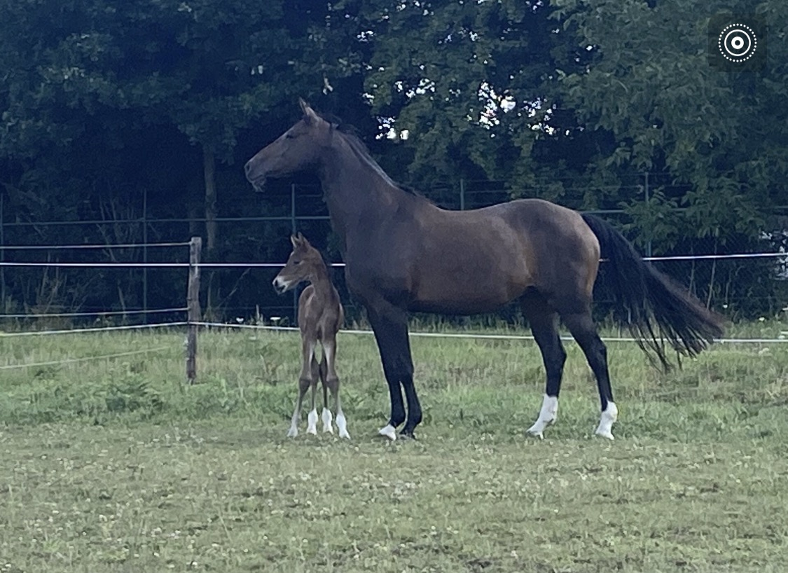
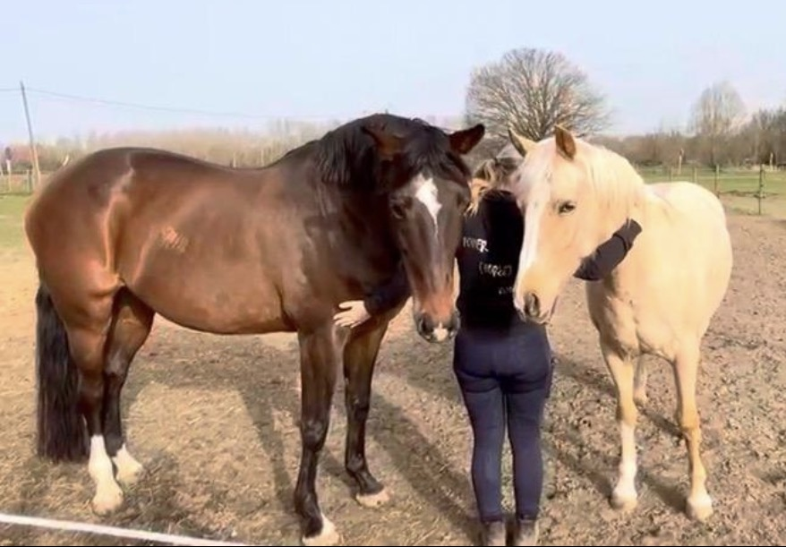
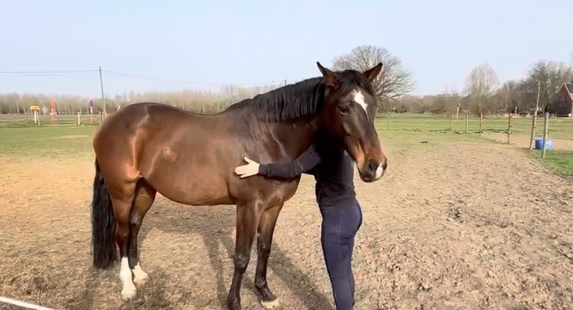
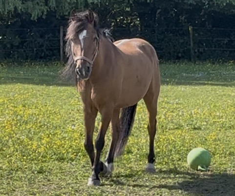
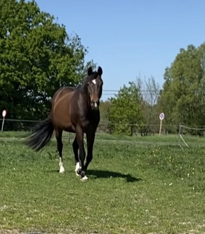
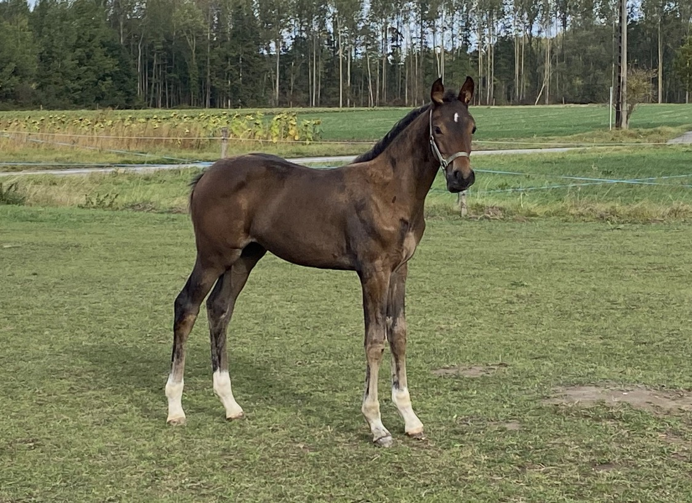

Gewenning
Gegeven door Hans
Je kind leert hoe je veilig met de dieren omgaat: hoe een pony in elkaar zit, hoe hij reageert, waar je op let. Het ervaart het dier aan de hand of erop, en groeit op eigen tempo. Dit is waar de meeste kinderen beginnen.

Onze pony's zijn geen manegepony's. Ze lopen niet in cirkeltjes achter elkaar. Ze hebben een eigen karakter, en dat verandert alles aan hoe we lesgeven.
Kom kennismakenDe club
Bij ons leert een kind een relatie opbouwen met een pony. Rijden is één van de manieren waarop dat gebeurt — een belangrijke, maar niet de enige en niet het doel op zich.
Dat klinkt misschien als een detail. Het is het hele verschil.
Omdat onze pony's een eigen wil hebben, kan een kind niet sturen op routine. Het moet leren communiceren: kijken naar het dier, aanvoelen wat er speelt, geduld hebben. Daarom geven we les aan één kind tegelijk, of aan twee. Niet omdat dat luxueuzer klinkt, maar omdat het niet anders kan met dieren die geen nummers zijn.
We zijn een sportclub, maar we zijn niet competitiegericht. Een les is beleving, geen prestatie.


Wie er lesgeeft
Katrien staat als kinderverzorgster in het onderwijs. Die achtergrond bepaalt hoe ze met kinderen omgaat: ze voelen zich op hun gemak, ze voelen zich gehoord, en ze merken dat iemand er is om hén te laten groeien — niet om een programma af te werken.
Daarnaast is ze gediplomeerd Initiator Paardrijden van de Vlaamse Trainersschool.
Die combinatie is zeldzaam. Pedagogisch geschoold én formeel bevoegd om paardrijles te geven, met jonge kinderen.
Wat we doen
En dat uur ziet er zo uit: je kind komt binnen en wordt welkom geheten. Even praten — hoe gaat het vandaag? Samen de pony van de weide halen. Kijken waar je kind vandaag staat: wat wil het, wat kan het aan. Poetsen, opzadelen, werken, afzadelen, verzorgen.
Het verzorgen hoort er volwaardig bij. Het is geen opruimen achteraf, het is waar de band met het dier ontstaat.
Heeft je kind een baaldag en geen zin in spannende dingen? Dan worden het spelletjes met de pony, of een wandeling. We werken op het tempo van het kind, niet op dat van een lesplan.

Gegeven door Hans
Je kind leert hoe je veilig met de dieren omgaat: hoe een pony in elkaar zit, hoe hij reageert, waar je op let. Het ervaart het dier aan de hand of erop, en groeit op eigen tempo. Dit is waar de meeste kinderen beginnen.
Gegeven door Katrien
Voor een kind dat heeft laten zien dat het écht wil leren rijden. Katrien neemt het onder haar vleugels en leert stap voor stap de kennis en techniek aan die rijden mogelijk maken.
Gegeven door Katrien
Dressuurmatig met de pony leren werken en groeien als combinatie — tot een niveau waarop competitie een optie zou kúnnen worden. Maar dat blijft een mogelijkheid, geen doel.
Vakantiekampjes
Het natuurlijke pad is: kampje → gewenning → rijles. Inhoudelijk is een kampje een uitgebreide gewenning: alle aspecten van het omgaan met een pony, gecombineerd met samen spelen en beleven.
Bij warm weer gaat er extra aandacht naar veiligheid en gezondheid — voor de kinderen én voor de dieren. Er is een zwembad om af te koelen, en de pony's krijgen douches.

De dieren
Dat is een verschil met een manege, waar elk dier een lesdier is. Bij ons woont een kudde. Je kind gaat op les bij drie van hen — en leert de andere kennen omdat ze er nu eenmaal zijn.

Nasser
C-pony · 23 jaar
Wit, klein en oud genoeg om alles al gezien te hebben. Nasser liep vroeger in de sport en doet het nu rustiger aan: wandelen en stappen met de allerkleinsten.

Joy
D-pony
De pony van de gewenning en de eerste lesjes. Bij Joy leert een kind wat het is om naast een dier te staan dat groter is dan jij.

Bibi
E-pony
Groter, en daarmee de pony waar kinderen naartoe groeien. Bibi werkt met beginners én met gevorderden.

Popje
Kweekmerrie · moeder van Cookie
Popje loopt geen lessen. Ze is de moeder van Cookie, en daarmee de reden dat er hier een jong paard rondloopt.

Cookie
Jaarling · geboren 2025
Nog te jong voor werk. Kinderen die hier komen zien haar opgroeien — dat is iets wat je in een manege niet meemaakt.

Vigor
5 jaar · Katriens sportpaard
Vigor is Katriens eigen paard en loopt in de sport. Hij staat niet bij ons op stal maar bij haar lesgever in Boortmeerbeek — Katrien blijft zelf ook leerling.
Praktisch
We werken uitsluitend op afspraak. Alles wordt vooraf gepland en afgerekend — ad hoc langskomen kan niet. Dat is geen onwil: met individuele lessen en dieren die van de weide moeten komen, kan het gewoon niet anders.
We werken met vaste afspraken, wekelijks of tweewekelijks. Zo weet je kind waar het aan toe is, en de pony ook. Een proefles is mogelijk om eerst eens te komen proeven.
Er komen geen dieren van buitenaf op onze terreinen.
Kon een les niet doorgaan? Dan wordt hij niet aangerekend. Om welke reden ook.
Het bedrag blijft als tegoed staan en wordt gebruikt voor een volgende les.
Tarieven
We werken bewust met richtprijzen en niet met een vaste tarievenlijst. Wat een les kost hangt af van de formule en de situatie.
Zit er een financiële drempel? Zeg het gerust. Daar valt over te praten.
Eerlijk gezegd
Om te vermijden dat je hier tijd in steekt en dan merkt dat het niet past:
Klinkt de rest wel als wat je zoekt? Dan komen we graag met je kennismaken.
Vragen
Vanaf 4 jaar. Is je kind jonger en lijkt het je toch klaar? Neem gerust contact op — soms kan het, maar dan bekijken we het per kind. Onze kerndoelgroep zijn kinderen; volwassenen kunnen bij ons terecht maar zijn niet waar we ons op richten.
Dan begin je bij gewenning of een vakantiekampje. Ongeveer drie kwart van onze deelnemers is beginner. Je kind hoeft niets te kunnen.
Eén of twee. Nooit meer.
Voor een proefles en voor gewenning volstaat de fietshelm die je waarschijnlijk al in huis hebt. Je hoeft dus niets aan te kopen om eens te komen proeven. Pas wanneer je kind aan echte rijlessen begint, is een paardrijhelm nodig.
Nee. Je kunt eerst een proefles doen. Daarna werken we met vaste wekelijkse of tweewekelijkse afspraken, die vooraf worden afgerekend.
Dan wordt de les niet aangerekend, en een al betaalde les blijft als tegoed staan.
Ongeveer veertig. Grofweg de helft in wekelijkse lessen, de helft via de vakantiekampjes.
Aanmelden
Vul het formulier in en we nemen contact met je op om een proefles in te plannen.
Werkt het formulier niet? Open het in een nieuw venster of mail ons op katriensponyclub@gmail.com.
Je gegevens komen terecht bij de club en worden gebruikt om contact met je op te nemen. Meer daarover in onze privacyverklaring.